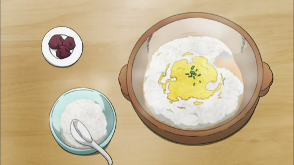

Rice Porridge

Description
In Japan, rice porridge is the equivalent of chicken noodle soup when you’re sick. As such, if a person has just fallen sick with a cold or a fever in an anime or manga (SKET Dance included), chances are a friend will rush over and make them a pot of hot rice porridge.
Ingredients
- 1/2 cup of white rice
- Water
- 1/2 teaspoon salt
Procedure
- Rinse the rice thoroughly in a pot
- Once the rice is clean, add in 3 cups of water and the salt and let the rice soak for at least 30 minutes.
- Bring the rice to a boil on medium-high heat, and then turn the down the heat to low and cook, covered by a lid, for 30 minutes. After that, turn off the heat, and let the rice sit for 10 more minutes.
- Pour/scoop into a bowl, and top with whatever you want!